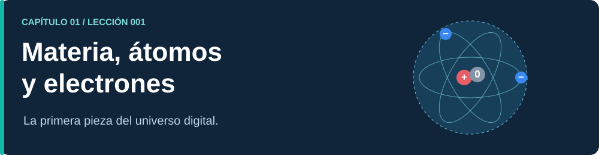

Capítulo 01 · Electrónica básicaDel electrón
Del electrón
al software.
Aprende desde los fundamentos físicos con ilustraciones, animaciones, ejemplos y experimentos.
24 clases de electrónica básica disponibles
Ruta de aprendizaje
01 · Electrónica básica
24 clases desarrolladas, con proyecto y evaluación final.
Leer clase 001 →02 · Electrónica analógica
24 clases planificadas. Material en preparación.
Consultar temario03 · Electrónica digital
24 clases planificadas. Material en preparación.
Consultar temarioElectrónica básica · 24 clases
Recorre el libro en orden o elige una lección. Cada tarjeta incluye descargas.
001 · Materia, átomos y electrones
002 · Fuerzas eléctricas, campo y ley de Coulomb
003 · Energía, trabajo y conservación de la energía
004 · Energía potencial eléctrica y voltaje
005 · Corriente eléctrica y movimiento de electrones
006 · Resistencia eléctrica y resistividad
007 · Ley de Ohm
008 · Potencia eléctrica y efecto Joule
009 · Fuentes de energía: baterías y generadores
010 · Circuitos abiertos, cerrados y cortocircuitos
011 · Componentes electrónicos y simbología
012 · Resistencias comerciales y código de colores
013 · Protoboard y multímetro
014 · Circuitos en serie
015 · Circuitos en paralelo
016 · Circuitos mixtos
017 · Primera ley de Kirchhoff: conservación de la carga
018 · Segunda ley de Kirchhoff: balance de energía
019 · Corriente continua y alterna
020 · Magnetismo y electromagnetismo básico
021 · Condensadores y almacenamiento de energía
022 · Diodos y LED
023 · Diagnóstico de fallas eléctricas
024 · Proyecto final, evaluación y sustentación
Biblioteca de la clase 001
Plantillas descargables
Clase 002 · Fuerzas eléctricas y campo
Libro ilustrado
14 temas, desde vectores hasta superposición.
Leer →Laboratorio interactivo
Varía carga, distancia y signo.
Simular →Presentación
Explicación visual.
Abrir →Guía ilustradaDescargar ↓
Presentación PDFDescargar ↓
PowerPoint editableDescargar ↓
EjerciciosDescargar ↓
LaboratorioDescargar ↓
PruebaDescargar ↓
SolucionarioDescargar ↓